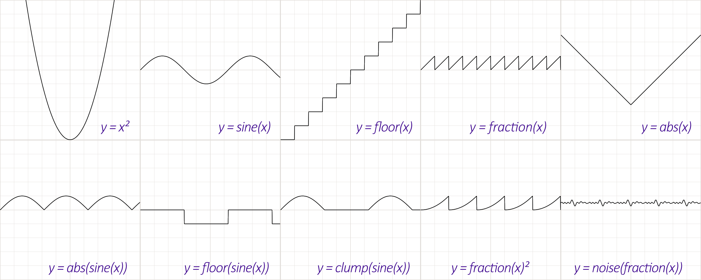

Joy Of Vex
- https://www.tokeru.com/cgwiki/JoyOfVex.html
- https://github.com/jtomori/vex_tutorial
- Houdini Hangout - The Joy of VEX
- TWA 후디니의 정석 - JOY_OF_VEX(한국어.ver)
- https://github.com/kiryha/Houdini/wiki/vex-for-artists

List
- JoyOfVex01 basic assignment, component assignment, arithmetic manipulation
- JoyOfVex02 length and distance functions, animate with @Time
- JoyOfVex03 clamp and fit, waves
- JoyOfVex04 chramp, using on attrib components, on time, on reranging outputs
- JoyOfVex05 modulo, more arithmetic tricks (quantising), but show that often a chramp is easier (eg stepped chramp);
- JoyOfVex06 point wrangle vs prim wrangle vs detail wrangle, user defined attributes
- JoyOfVex07 using the other inputs on wrangles, do things to geometry based on other geometry
- JoyOfVex08 noise, various types, how it can be scaled, vector vs scalar noise, why you might use vops here instead
- JoyOfVex09 dot and cross product, fake lighting combing normals to a surface, vector maths primer
- JoyOfVex10 relpointbbox
- JoyOfVex11 if statements
- JoyOfVex12 nearpoints, arrays
- JoyOfVex13 for loops (ties nicely into arrays)
- JoyOfVex14 creating geometry, deleting geometry, debugging vex
- JoyOfVex15 copy sop, simple instance attributes (pscale)
- JoyOfVex16 copy sop, midweight instance attributes (scale, N)
- JoyOfVex17 copy sop, orient, quaternions
- JoyOfVex18 intrinsics
- JoyOfVex19 primuv, xyzdist
- JoyOfVex20 pointclouds, further learning
01
- Attribute Wrangle
- Runs a VEX snippet to modify attribute values.
- Wrangle : 다루다
| @Cd | 색상 |
| @N | 노말 |
| @ptnum | 해당 포인트 번호 |
| @numpt | 포인트 총 갯수 |
| ch('scale') | 채널 |
| sin | 사인 |
@Cd = @N;
@Cd = @P;
@Cd = @ptnum/@numpt;
@Cd = float(@ptnum) / ch('scale');
@Cd = sin(@ptnum);
https://www.sidefx.com/docs/houdini/hom/hou/Geometry.html https://www.sidefx.com/docs/houdini/hom/hou/Point.html https://docs.python.org/3.13/library/math.html https://www.sidefx.com/docs/houdini/hom/hou/index.html#parmtemplates_group
node = hou.pwd()
geo = node.geometry()
if not geo.findPointAttrib("Cd"):
geo.addAttrib(hou.attribType.Point, "Cd", (1.0, 1.0, 1.0))
if not geo.findPointAttrib("N"):
geo.addAttrib(hou.attribType.Point, "N", (0.0, 1.0, 0.0))
points = geo.points()
numpt = len(geo.points()) # @numpt
numpt = geo.intrinsicValue("pointcount") # @numpt
for point in points:
P = point.position() # @P
ptnum = point.number() # @ptnum
N = point.attribValue("N") # @N
point.setAttribValue("Cd", P)
import math
radian = 1.0
sin_value = math.sin(radian)
def AddParameters():
parameters = [
# hou.FloatParmTemplate(name, label, num_components, ...)
hou.FloatParmTemplate("scale", "scale", 1, default_value=(1.0,), min=0.0, max=10.0),
]
node = hou.pwd()
parm_template_group = node.parmTemplateGroup()
for param in parameters:
param_name = param.name()
if not node.parm(param_name):
parm_template_group.append(param)
node.setParmTemplateGroup(parm_template_group)
02
length(@P) == distance(@P, {0, 0, 0})
| chf | hou.FloatParmTemplate("scale", "scale", 1, default_value=(1.0, ), min=0.0, max=10.0) |
| chv | hou.FloatParmTemplate("scale", "scale", 3, default_value=(1.0, 1.0, 1.0), min=0.0, max=10.0) |
fit(v, in_min, in_max, out_min, out_max);
@Time : Float time ($T) |
03
float d = length(@P);
d *= ch('v_scale');
d += @Time;
@P.y = sin(d);
clamp(v, min, max);
04
chramp
05
trunc
06
::pass
07
https://www.sidefx.com/docs/houdini/vex/functions/minpos.html minpos VEX function Given a position in world space, returns the position of the closest point on a given geometry.
https://www.sidefx.com/docs/houdini/vex/functions/nearpoint.html nearpoint VEX function Finds the closest point in a geometry.
@P = point(1, 'P', @ptnum); @P = @opinput1_P;
08
noise curlnoise pnoise
09
dot cross
10
normalize relpointbbox
11
if
12
| Ctrl + / | 라인 주석 |
13
foreach( element; array)
{
// do things to element
}
for ( starting value; test; value increment)
{
}
14
addpoint // removepoint addprim // removeprim addvertex // removevertex
15
::pass
16
::pass
17
quaternion
float angle = ch('angle');
vector axis = chv('axis');
@orient = quaternion(angle, axis);
@N = {0,1,0};
float s = sin(@Time);
float c = cos(@Time);
@up = set(s,0,c);
@orient = quaternion(maketransform(@N, @up));
matrix3 m = ident();
@orient = quaternion(m);
vector rot = radians(chv('euler'));
@orient = eulertoquaternion( rot, 0);
vector4 a = {0,0,0,1};
vector4 b = quaternion({0,1,0}*$PI/2);
@orient = slerp(a, b, ch('blend') );
@orient = qmultiply(@orient, extrarot);
matrix m = qconvert(@orient);
radians qconvert
https://www.sidefx.com/docs/houdini/vex/attribtypeinfo_suite.html Sets the meaning of an attribute in geometry. int setattribtypeinfo(int geohandle, string attribclass, string name, string typeinfo)
18
matrix3 m = ident();
setprimintrinsic(0, 'transform', 0, m);
matrix3 m = matrix3( myfancy4x4matrix);
matrix pft = primintrinsic(0,'packedfulltransform',@ptnum);
matrix3 rotandscale = matrix3(pft);
3@b = rotandscale;
19
vector uv = chv('uv');
@P = primuv(1,'P',0,uv);
@N = primuv(1,'N',0,uv);
i@primid;
v@uv;
@dist;
@dist = xyzdist(1,@P, @primid, @uv);
@P = primuv(1,'P',@primid, @uv);
20
int pts[] = nearpoints(1,@P,ch('d'),25);
int pt;
vector pos;
foreach (pt; pts)
{
pos = point(1,'P',pt);
addpoint(0,pos);
}
int pts[] = pcfind(1,'P',@P,ch('d'),25);
int pt;
vector pos;
foreach (pt; pts)
{
pos = point(1,'P',pt);
addpoint(0,pos);
}
pcopen pcfilter
int pc = pcopen(0,'P',@P, ch('dist'), chi('maxpoints'));
@Cd = pcfilter(pc, 'Cd');